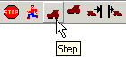
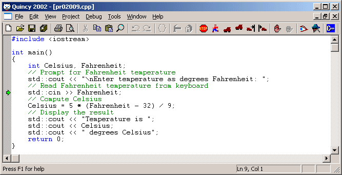
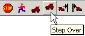
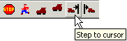
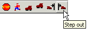

You can step through a program three ways: by single-stepping, by stepping over a function call, and by stepping to the cursor location.
Single-stepping executes the program one source code line at a time. To single-step:

If Quincy has not already started the program, it does so first by opening the console window . Then Quincy executes instructions to the next line of executable source code, stopping there, and displaying a green arrow in the margin of the next line to be executed in the editor window as shown here.

Each successive step executes the marked line of source code. If the source code line calls a function in another source code file in your project , Quincy opens that source code file as Quincy's active document window. If the source code line is a statement that reads keystrokes from the console, you must select the console window and make the data entry that the program is expecting before proceeding. If the statement writes to the console, the display shows in the console window after you make the step. When the last statement of the program has been stepped, select the console window and enter that last keystroke to close the console window.
Stepping over a function call executes the function call but does not step into its source code. Use this command when you do not want to step through a function in your program--perhaps you are satisfied with how that function is working and you do not want to spend time stepping through its source code.
To step over a function call:

Quincy executes the function call and stops on the next statement following the function call. If, however, the function contains a breakpoint , Quincy stops at the breakpoint instead. Similarly, if the function requires console input, you must switch to the console window and enter the required data before proceeding.
Stepping to the cursor location runs the program and breaks at the source code statement where the keyboard cursor is positioned. Use this procedure to set a temporary breakpoint when the source code line is in view.
To step to the cursor location:

Quincy runs the program from its current state and stops when the program arrives at the selected line of code. If, however, the function contains a breakpoint , Quincy stops at the breakpoint instead.
Stepping out of a function runs the program to the end of the current function and then breaks at the line following the call to the function.
To step out of a function:

Quincy runs the program from its current state and stops when the program arrives at the line of code following the call to the function. If, however, the function contains a breakpoint, Quincy stops at the breakpoint instead.